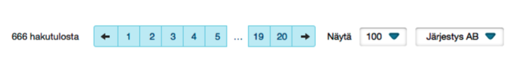
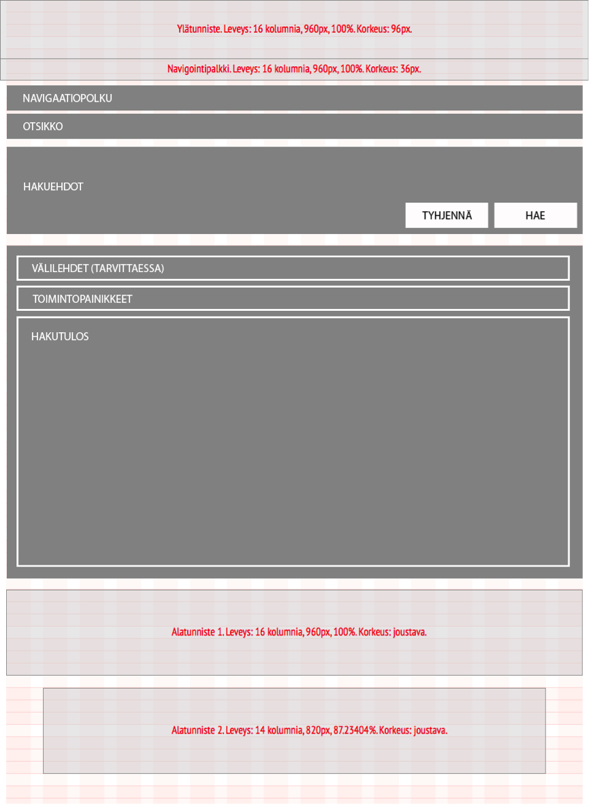
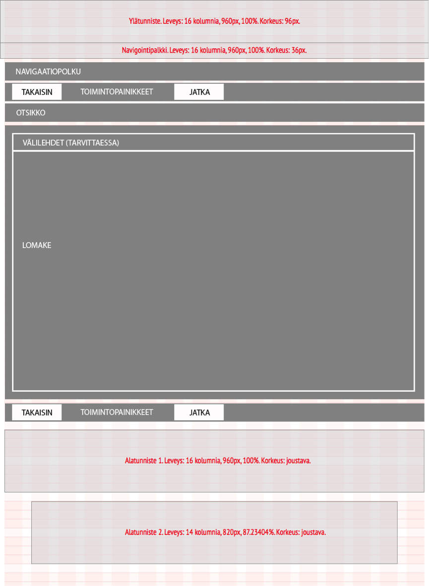
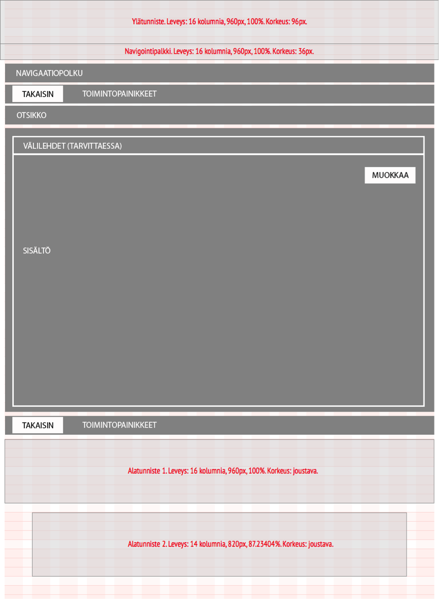

Virkailijan käyttöliittymän tyyliopas
Versio 0.1 — 22.4.2014 - heli.hintikka@cresense.com
Johdanto
Tämä ohjeisto määrittelee Opintopolku-palvelun käyttöliittymän yhdenmukaisuussuositukset. Ohjeistoa käytetään Opintopolun virkalijapalveluiden ja julkisen palvelun (jäljempänä Oppijan palvelun) käyttöliittymien ylläpidon, käyttöliittymäsuunnittelun, visuaalisen suunnittelun ja käytettävyyssuunnittelun apuna ja ohjeena. Ohjeiston tarkoituksena on varmistaa palvelun yhdenmukainen käyttökokemus ja tehostaa palvelun suunnittelu, kehitys- ja ylläpitotyötä.
Tämä ohjeisto ei kuvaa Opintopolku-palveluun sisältyvien palveluiden toimintalogiikkaa tai kokonaisuuksia, ainoastaan komponentit ja käytänteet joita palveluissa tulee käyttää jotta kokonaisuudesta tulee yhdenmukainen. Jokainen palvelu, sen logiikka, kokonaisuus ja käyttötarkoitus kuvataan erikseen palvelukohtaisissa määrityksissä.
Tämän ohjeiston suosituksista poikkeaminen tulee perustella ja poikkeusten käytettävyysvaikutukset tulee arvioida.
Ohjeistoa tulee kehittää jatkuvasti palvelun elinkaaren aikana jotta se on aina ajantaisainen ja vastaa käyttäjien ja palvelun tarpeisiin.
Käyttöliittymän yleiset suunnitteluperiaatteet
Opintopolku-palvelun suunnittelussa noudatetaan seuraavia yleisiä suunnitteluperiaatteita:
- Käyttöliittymä suunnitellaan WWW-ympäristöön. Järjestelmän tulee olla loppukäyttäjille kokonaisuudessaan selainkäyttöinen ilman selainlaajennusten plug-in) asentamista.
- Oppijan palvelu suunnitellaan esteettömäksi WCAG A-tason vaatimusten mukaisesti ja hakulomakkeen osalta AA-tason vaatimusten mukaisesti.
- Virkailijapalvelussa javascriptin käyttöä ei ole tarve rajoittaa.
- Käyttäjän muistikuorma pyritään minimoimaan.
- Esimerkiksi käyttäjän työnkulkuun tarvitsemat ohjeet sijoitetaan suoraan siihen yhteyteen, jossa sitä tietoa tarvitaan.
- Käyttöliittymissä käytetään yhdenmukaisia ratkaisuja eri palveluissa samanlaisiin toiminnallisuuksiin. Näin tuetaan käyttöliittymän opittavuutta.
- Käyttöliittymän suunnittelussa huomioidaan pyrkimys välttää virhetilanteiden syntymistä
- Käyttäjille annetaan selkeästi tietoa ja palautetta järjestelmän toiminnasta.
- Pyrkimyksenä on käyttää käyttöliittymässä yleiskieltä, erityisesti Oppijan palvelussa
- Viranomaispalvelun luonteen takia hyväksytään myös laki- ja asetusteksti, mutta tällöin asia selitetään auki ohjetekstissä asiayhteydessään.
Selain- ja käyttövaatimukset
Käyttöliittymä suunnitellaan ensisijaisesti tietokoneella ja tietokoneen hiirellä käytettäväksi. Käyttöliittymän tulee olla käytettävissä seuraavilla WWW-selaimilla:
- Internet Explorer (versio 9 ja uudemmat)
- Mozilla Firefox (versio 4 ja uudemmat)
- Opera (versio 11.10 ja uudemmat)
- Safari (versio 4.1/5.0 ja uudemmat)
- Google Chrome (versio 11.0 ja uudemmat)
Käyttöliittymän toteutus tulee testata ja sen standardinmukaisuus todentaa selainkohtaisesti.
Oppijan palvelun esteettömyysvaatimukset sisältävät määrityksiä käyttöliittymän käyttöön tietokoneen näppäimistöllä. Näiden määritysten ulkopuolella suositellaan seuraavien näppäintoimintojen tukemista sekä virkailijapalveluissa että Oppijan palvelussa:
- Tietoja syötettäessä CTRL + S näppäinyhdistelmä tallentaa tiedot kuten Tallenna-painike
- Tietoja syötettäessä TAB painikkeella siirrytään lomakkeen kentästä toiseen tabulointijärjestyksen mukaisesti
- Hakukentän ollessa aktiivinen ENTER näppäin käynnistää haun kuten Hae –painike
- Näkymän sisältäessä välilehtiä CTRL + VASEN/OIKEA nuolinäppäimet siirtävät välilehdeltä toiselle seuraavaan välilehteen vasemmalle tai oikealle
Lisäksi tuetaan yleisiä selainten tukemia näppäinkomentoja niiltä osin kuin ne eivät ole ristiriidassa yllä määritettyjen kanssa.
Oppijan palvelu suunnitellaan responsiiviseksi niin, että sen käyttö myös mobiili- ja tablet-laitteilla on miellyttävää ja käytettävää.
Huom: Tämä tyylioppaan versio ei sisällä responsiivista käyttöliittymää. Se lisätään tyylioppaaseen määritysten valmistuttua.
Tietojen esittäminen
Tässä kuvattavia yleisiä tietojen esitystapoja käytetään yhdenmukaisesti käyttöliittymän kaikilla sivuilla. Mikäli käyttäjällä on ollut mahdollisuus tietoja järjestelmään tallennettaessa vaikuttaa tietojen muotoiluun tai esitystapaan, noudatetaan aina käyttäjän tallentamaa muotoilua.
Kieliversiot
Palvelu sisältää useita kieliversioita. Käyttöliittymäkielet ovat virkailijapalveluissa suomi ja ruotsi, Oppijan palvelussa suomi (Opintopolku.fi), ruotsi (Studieinfo.fi) ja englanti (Studyinfo.fi).
Virkailijapalveluissa käyttöliittymäkieli määräytyy käyttäjän omissa tiedoissa valitun asiointikielien mukaisesti. Palvelun aloitusnäkymässä (kirjautumissivu) jossa käyttäjää ei vielä ole tunnistettu tarjotaan ylätunnisteessa kielivalinta suomi / ruotsi, mikä vaikuttaa ainoastaan kyseiseen näkymään sekä siihen suoraan liitettyihin lisänäkymiin, kuten Rekisteriseloste ja Tietosuojaseloste. Oletusarvoinen kieli aloitusnäkymässä on suomi.
Oppijan palvelussa käyttäjä voi tehdä kielivalinnan milloin tahansa palvelun käytön aikana. Kielivalinta muuttaa käyttöliittymän koko sisällön valitulle kielelle, seuraavia poikkeuksia lukuun ottamatta:
- Korkoeakouluja lukuunottamatta koulutuksen kuvauksen tekstisisältö ja nimi näytetään aina oletusarvoisesti opetuskielellä. Koulutuskuvauksesta voi katsoa myös muunkieliset kuvaukset mikäli ne ovat olemassa.
- Korkoeakouluja lukuunottamatta koulutukseen hakeutuminen näytetään sillä kielellä, jolla valintaperusteet on kuvattu, oletusarvoisesti opetuskielellä. Esimerkiksi lukiokoulutuksen ja ammatillisten perustutkintojen opiskelijaksi ottamisen perusteet ovat vain suomeksi ja ruotsiksi (asetusteksti).
- Korkoeakouluja lukuunottamatta oppilaitoksen kuvaus näytetään samalla kielellä kuin koulutuskuvaus, mikäli organisaation kuvaus on olemassa ko. kielellä. Muussa tapauksessa esitetään käyttöliittymän kielisenä.
Käyttöliittymässä tulee kiinnittää huomiota siihen, että sen kieli pysyy samana, vaikka sisältö olisi monikielistä. Syöttökenttien nimet ovat esimerkiksi suomenkielisessä käyttöliittymässä aina suomeksi, vaikka syötettäisiin ruotsin- tai englanninkielistä sisältöä.
Yksittäiset sisältöelementit joista on useita kieliversioita esitetään käyttäjille vaihtoehtoina jotka merkitään ISO 639 –standardin mukaisilla kielikoodeilla. Kieliversioiden esittämisjärjestys päätetään tarpeen mukaan.
Mikäli käyttäjälle tarjotaan yksittäisiä sisältöelementtejä tai käyttöliittymän sivuja joista on vain muu kuin käyttöliittymän kielen mukainen versio, tulee kielen vaihtumisesta esittää aina selkeä maininta.
Terminologia
Käyttöliittymässä suositellaan käytettävän yleiskieltä ja mahdollisimman yhdenmukaisia termejä sekä virkailijapalvelussa että Oppijan palvelussa. Viranomaispalvelun luonteen vuoksi myös laki- ja asetusteksti hyväksytään, mutta tällöin asia suositellaan selitettäväksi ohjetekstissä asiayhteydessään.
Opetus- ja koulutussanaston osalta palvelussa käytetään Oksa-sanastoa: https://confluence.csc.fi/pages/viewpage.action?pageId=8688189
Palvelun kehityksessä hyödynnetään palveluun luotua Koodistopalvelua, jotta termit ovat yhtenevät ja samassa muodossa kaikissa alipalveluissa.
Käyttöliittymän tekstit tulee aina oikolukea ja tarkistaa niiden oikeakielisyys.
Lyhenteet
Muiden kuin yleisten lyhenteiden käyttöä vältetään. Yleiset lyhenteet joita palvelussa käytetään on listattu alla:
| Käyttöyhteys | Käytettävä lyhenne suomeksi |
|---|---|
| Kellonaika | klo |
| Postilokero | PL |
| Puhelinnumero | Puh. |
| Faksinumero | Fax. |
| Sähköpostiosoite | |
| Euro | EUR |
| Maanantai | ma |
| Tiistai | ti |
| Keskiviikko | ke |
| Torstai | to |
| Perjantai | pe |
| Lauantai | la |
| Sunnuntai | su |
| Luokka-aste | lk |
Yleisten lyhenteiden erikieliset versiot lisätään tähän määritysten valmistuttua.
Nimet
Nimet esitetään seuraavasti:
- Henkilöiden nimet
- Mikäli henkilöiden nimet esitetään yhtenäisinä (sukunimi ja etunimet yhdessä), esitetään ne sukunimi ensin jonka jälkeen etunimet järjestyksessä, sukunimen ja ensimmäisen etunimen välissä käytetään erottimena pilkkua.
- Esimerkki: Meikäläinen, Matti Antero
- Oppilaitosten nimet
- Oppilaitosten nimet esitetään käyttäen isoa alkukirjainta nimen jokaiselle sanalle. Mikäli oppilaitoksen nimen yhteyteen merkitään luokka-aste käyetään erottimena pilkkua ja välilyöntiä:
- Esimerkki: Helsingin Suomalainen Yhteiskoulu, 9.lk
- Luokka-asteet
- Luokka-asteet merkitään käyttäen luokka-asteen numeraalista tunnusta sekä pistettä ja lyhennettä lk.
- Esimerkki: 9.lk
Numeerinen tieto
Numeerinen tieto esitetään seuraavasti:
- Päivämäärä
- Päivämäärät esitetään ilman etunollia
- Vuosiluvut esitetään neljällä numerolla
- Erotinmerkkinä käytetään pistettä
- Esimerkki: 1.1.2014
- Kellonaika
- Käytetään 24 tunnin kelloa
- Tunnit esitetään ilman etunollaa
- Erotinmerkkinä käytetään kaksoispistettä
- Esimerkki: 16:15 tai 9:15
- Lukumäärä
- Desimaalierottimena käytetään pilkkua
- Esimerkki: 1,5
- Valuutta
- Tuhaterottimena käytetään välilyöntiä
- Desimaalierottimena käytetään pilkkua
- Käytetään yleisesti tunnettuja valuuttojen lyhenteitä
- Esimerkki: 1 000,00 EUR
- Puhelinnumero
- Katso yhteistietojen esittäminen
- Henkilötunnus
- Kaikki henkilötunnuksen sisältämät merkit erottimineen kirjoitetaan yhteen ilman välejä
- Henkilötunnus on aina linkki henkilön tietoihin
- Hakemusnumero
- Kaikki tunnuksen sisältämät merkit erottimineen kirjoitetaan yhteen ilman välejä
- Henkilötunnus on aina linkki henkilön tietoihin
- Organisaatio- tai oppijanumero
- Kaikki numeron sisältämät merkit erottimineen kirjoitetaan yhteen ilman välejä
- Esim. 1.2.246.562.24.66090832772
Yhteystiedot
Yhteystiedot esitetään seuraavasti:
- Sähköpostiosoite
- Sähköpostiosoitteet esitetään sellaisenaan ilman otsikkoa tai etuliitettä (label)
- Kun sähköpostisoitteen ei haluta olevan linkki käytetään (a) merkintää @-merkkinä
- Esimerkki: esimerkkiosoite(a)oph.fi.
- Kun sähköpostiosoitteen halutaan olevan linkki käytetään @-merkkiä ja tekstilinkin esitysmuotoa. Tällöin sähköpostiosoitteen klikkaaminen aktivoi sähköpostiviestin luomisen valittuun osoitteeseen.
- Esimerkki: esimerkkiosoite@oph.fi
- Kotimaan puhelinnumero
- Kotimaiset puhelinnumerot esitetään erottaen suuntanumerot ja liittymätunnisteet välilyönnillä ja numerot enintään neljän numeron jaksoissa erottaen jaksot välilyönnillä. Puhelinnumeron eteen lisätään tunniste Puh.
- Esimerkki: Puh. 040 1234 567, Puh. 09 1234 567.
- Ulkomaan puhelinnumero
- Ulkomaalaiset puhelinnumerot esitetään kuten kotimaiset, mutta niihin lisätään ensimmäiseksi + -merkki ja maatunnus omana jaksonaan ja poistetaan suuntanumerosta/liittymätunnisteesta ensimmäinen 0.
- Esimerkki: Puh. +358 40 1234 567, Puh. +358 9 1234 567
- Faksinumero
- Faksinumerot esitetään kuten puhelinnumerot tunnisteella Fax.
- Esimerkki: Fax. 09 1234 567
- Internet-osoite
- Internet-osoitteet esitetään muodossa www.internetosoite.fi linkitettynä ko. osoitteeseen.
- Jos yhteystiedosta on useita kieliversioita erotetaan ne / merkillä.
- Esimerkki: Puh. 040 1234 567 / Tfn. 040 2345 678
- Käyntiosoite
- Käyntiosoitteet esitetään erottaen katuosoite ja postinumero pilkulla tai rivinvaihdolla
- Esimerkki: Katuosoite 1 A 2, 00100 Helsinki
- Postiosoite
- Postiosoitteet esitetään kuten käyntiosoite ellei kysymyksessä ole postilokero-osoite. Postilokero-osoitteet esitetään käyttän PL tunnusta postilokeronumeron edessä. Postilokeronumer erotetaan postinumerosta pilkulla tai rivinvaihdolla
- Esimerkki: PL 123, 00100 HELSINKI
- Postiosoitteet ja käyntiosoitteet esitetään erikseen ja nimetään tarvittaessa selkeästi
Järjestys ja ryhmittely
Tiedot esitetään pääsääntöisesti yhdellä sivulla ja ryhmitellään sopiviin asiakokonaisuuksiin jotka otsikoidaan kuvaavasti. Olennaisimmat tiedot pyritään aina esittämään ensin. Tekstimuotoinen tieto tasataan oletusarvoisesti vasemmalle ja otsikot erotetaan muusta sisällöstä.
Tietoa voidaan jäsentää sekä numeroimattomiin että numeroituihin listoihin, sekä taulukoihin (kts. Taulukot).
Mikäli esitettäviä tietoja on runsaasti voidaan tiedot jakaa usealle sivulle käyttäen joko
- Välilehtiä (tab)
- Sivutusta (pagination)
- Ohjattua sivutusta (wizard)
Ensisijaisesti tulee käyttää välilehtiä. Välilehtien käytön edellytyksenä on, että tieto voidaan jakaa asiakokonaisuuksiin jotka voidaan selkeästi nimetä ja erottaa toisistaan. Kullekin välilehdelle tulee antaa otsikko joka kuvaa sillä esitettävää asiakokonaisuutta.
Mikäli välilehtiä ei voida käyttää käytetään sivutusta. Sivutusta käytettäessä suositellaan, että käyttäjällä on mahdollisuus vaikuttaa tiedon esitysjärjestykseen sekä yhdellä sivulla esitettävän tiedon määrään, ja tätä kautta sivujen lukumäärään.
Ohjattua sivutusta käytetään ainoastaan kun halutaan ohjata käyttäjä käymään läpi tai syöttämään tietoja määrätyssä järjestyksessä.
Taulukot ja listat
Taulukoita käytetään kun tietoa tulee jäsentää yksinkertaista tekstiä tai listaa enemmän. Taulukolla ei ole välttämätöntä olla otsikkoa, mutta taulukon sarakkeilla tulee olla sarakeotsikot. Sarakkeiden tai rivien lukumäärää ei ole rajattu.
Taulukon soluissa voidaan vapaasti käyttää tekstiä, kuvia, kuvakkeita, numeraalista tietoa, syöttökenttiä, linkkejä, kontrolleja ja toimintoja. Taulukon rivit erotetaan toisistaan raidoituksella (kts. Visuaalinen tyyli) ja taulukon yhteydessä käytetään hover-toimintoa joka korostaa sen taulukon rivin jonka yllä hiiren kursori kulloinkin on.
Käyttäjä voi järjestää taulukon kunkin sarakeotsikon mukaan joko nousevaan tai laskevaan järjstykseen. Taulukko on aina järjestetty jonkin sarakeotsikon mukaan, oletusarvoisesti ensimmäinen vasemmalta. Taulukon järjestävä sarake indikoidaan nuoli-ikonilla ja nuolen suunta osoittaa järjestyksen suunnan.
Listalla tulee olla otsikko. Seuraavien listatyyppien käyttöä suositellaan:
- Numeroimaton lista, jossa luettelomerkkinä käytetään palloa (bullet point)
- Numeroitu lista jossa luettelomerkkinä käytetään järjestysnumeroa
- Linkkilista jossa luettelomerkkinä käytetään >> -tunnistetta linkkien edessä
- Linkkilistassa linkit ovat valittavissa ja käyttäytyvät kuten linkeille on määritetty
- Kuvakkeellinen lista jossa luettelomerkkinä käytetään graafista kuvaketta
- Kuvakkeellisessa listassa merkinnät voivat olla valittavissa tai kuvake voi toimia valikkona
- Toiminnalliset listat joissa käyttäjä voi tehdä valintoja.
- Katso lisää: Toiminnalliset komponentit
Toiminnalliset komponentit
Tässä kuvataan käyttöliittymän toiminnalliset komponentit joiden avulla käyttäjä voi suorittaa palvelun toimintoja. Niiltä osin kuin ne eivät ole ristiriidassa tässä määritettävien komponenttien kanssa selaimen toiminnallisuuksia ei poisteta käytöstä vaan tuetaan näiden lisäksi.
Linkit
Linkkeja käytetään siirtymiseen eri sivujen ja näyttöjen välillä. Linkkejä voidaan käyttää myös painikkeiden tapaan toiminnoissa jotka eivät vaikuta järjestelmän tilaan, vaan esimerkiksi kopioivat syöttökentän lomakkeella.
Linkit esitetään alleviivattuina. Tekstin seassa olevat linkit esitetään selkokielisenä tekstinä niin, että linkin kohde käy ilmi linkin tekstistä. Esitettäessä linkkejä listoissa, internet-osoitteina tai muissa vastaavissa tapauksissa voidaan linkit esittää URL-osoitteina. Tällöinkin ensisijaisesti suositellaan käytettävän selkokielisiä linkin kohteen esitteleviä tekstejä, ja tarvittaessa niiden yhteyteen voidaan lisätä URL-osoite suluissa mikäli se katsotaan tarpeelliseksi.
Linkeillä käytetään neljää tilaa, joille kullekin on oma visuaalinen määritys (kts. Visuaalinen tyyli):
- Linkki on Normaali-tilassa (Idle) aina kun se ei ole jossain muussa tilassa. Linkki on oletusarvoisesti Normaali-tilassa.
- Linkki on Hover-tilassa kun hiiren kursori on sen päällä
- Linkki on Active-tilassa kun hiiren painike on alaspainettuna linkin kohdalla. Tällöin linkki tulee valituksi.
- Linkki on Visited-tilassa sen jälkeen kun se on valittu ja kunnes se poistuu selainhistoriasta, jolloin linkki palautuu Normaali-tilaan.
Linkit jotka johtavat sivuille palvelun sisällä avataan samaan selainikkunaan. Linkit jotka johtavat ulos Opintopolku-palvelusta avataan uuteen selainikkunaan uutena selaimen välilehtenä.
- Kun linkki johtaa ulos Opintopolku-palvelusta merkitään se kuvakkeella joka sijoitetaan linkkitekstin yhteyteen sen vasemmalle puolen (kts. Visuaalinen tyyli)
- Kun linkki sijaitsee linkkilistassa käytetään listan erottimena >> -merkintää
- Kun linkki johtaa ladattavaan tiedostoon merkitään tiedostotyypin tunniste suluissa linkkitekstin yhteyteen sen oikealle puolen välilyönnillä erotettuna
- Kuvia jotka sisältävät linkin ei korosteta visuaalisesti
Selain- ja käyttöjärjestelmäkohtaisesti tuetaan hiiren kursorin muodon muuttumista vietäessä kursori linkin ylle. Tämä koskee myös kuvia joissa on linkki.
Painikkeet
Painikkeita käytetään kun käyttäjälle mahdollistetaan suoritettavaksi toimintoja jotka vaikuttavat järjestelmän tilaan.
Painikkeet sijoitetaan sivupohjien mukaisesti muusta sisällöstä erilleen, yleensä joko sivun tai dialogi-ikkunan ylä- tai alalaitaan. Alueelle jolle painikkeet sijoitetaan ei sijoiteta muuta tietoa tai sisältöä. Painikkeiden järjestyksen tulee olla sama kaikilla sivuilla, sivupohjien määritysten mukaan. Periaatteena on, että suorittava toiminto edeltää ei-suorittavaa (lukusuunta oikealta vasemmalle tai ylhäältä alas); Kyllä edeltää Ei:tä, Tallenna edeltää Peruutusta. Tätä periaatetta noudatetaan mikäli sivu ei noudata sivupohjaa tai sivulle ei ole sivupohjaa.
Sivun ensisijainen toiminto näytetään keltaisena painikkeena. Sivulla suositellaan olevan vain yksi ensisijainen toiminto. Mikäli sivulla on useita samanarvoisia ensisijaisia toimintoja voi keltaisia painikkeita olla tarvittaessa useita, ei kuitenkaan koskaan kolmea enempää. Mikäli sivulla tai dialogissa on vain yksi painike, on se aina ensisijainen.
Mikäli sivulla on haku-toiminto, suositellaan Hae-painikkeen olevan ensisijainen. Lomakkeella Tallenna-painikkeen suositellaan olevan ensisijainen. Ohjatussa sivutuksessa Seuraava-painikkeen suositellaan olevan ensisijainen.
Painikkeita on kolmea tyyppiä:
- Peruspainike, jota käytetään oletusarvoisesti
- Kuvakkeellinen painike, jota käytetään erikseen määritellyissä tapauksissa
- Kuvakepainike, jota käytetään kun painike tulee sijoittaa tietosisällön yhteyteen
Peruspainike
Peruspainike sisältää tekstin joka kuvaa painikkeen toiminnon verbinä joka kirjoitetaan isolla alkukirjaimella. Poikkeuksena ovat monivaiheiset toiminnot, kuten ohjattu sivutus (wizard), joissa käytetään substantiivejä painikkeiden nimeämisessä. Teksti tasataan painikkeen sisällä keskelle.
Peruspainikkeesta on käytettävissä kaksi kokoa: Normaali ja Suuri. Normaali on ensisijainen ja oletusarvoinen painikkeen koko. Suurta painiketta voi käyttää näkymissä, joissa on vain vähän toimintoja ja normaali painike näyttäisi suhteettoman pieneltä muuten tyhjällä sivulla. Esimerkiksi jos näkymässä on vain yksi hakukenttä ja painike (hakukentän on kuitenkin silloin oltava suhteessa painikkeen kokoon).
Kuvakkeellinen painike
Painike kuvakkeella sisältää tekstin samalla tavalla kuin peruspainike ja sen lisäksi kuvakkeen painikkeen sisällä tekstin oikealla puolen. Teksti ja kuvake tasataan ryhmänä painikkeen sisällä keskelle.
Kuvakkeellista painiketta käytetään seuraaville toiminnoille:
- Lisäys: Lisäyksen kohde voi vaihdella ja ilmaistaan tekstillä. Tarkoituksena on, että kun tehdään lisäyksiä järjestelmään käytetään kuvakkeellista lisää –painiketta.
- Eteneminen: Eteneminen voi olla joko eteenpäin tai taaksepäin ja painike voidaan nimetä eri tavoin, kuten Takaisin / Jatka tai Edellinen / Seuraava. Tarkoituksena on, että kun edetään takaisin tai seuraavaan käytetään kuvakkeellista etenemis –painiketta.
- Sähköposti: Käytetään kun lähetetään sähköpostia
- Hae: Käytetään kun aktivoidaan haku järjestelmään
- Lataa: Käytetään kun ladataan tietoja tai tiedostoja järjestelmään
- Tulosta: Käytetään kun järjestelmän tietoja tulostetaan
- Tallenna: Käyetään kun järjestelmään tallennetaan tietoja
- Muokkaa: Käytetään kun järjestelmään tallennettuja tietoja avataan muokattavaksi
- Poista: Käytetään kun järjestelmään tallennettuja tietoja poistetaan
Kuvakepainike
Kuvakepainike on erityistapaus jota käytetään ainoastaan kun painike on välttämätöntä sijoittaa tietosisällön yhteyteen. Kuvakepainikkeessa on ainoastaan kuvake, ja se voidaan sijoittaa taulukon soluun, lomakkeelle tai vastaavaan tilanteeseen.
Kuvaketta voidaan käyttää seuraaville toiminnoille:
- Ohje: Kuvake joka avaa lomakkeella joko asiakohtaisen tai lomakekohtaisen ohjeen
- Kalenteri: Kuvake joka avaa kalenteri-kontrollin tiedonsyötön yhteydessä
- Poista: Käytetään kun järjestelmään tallennettuja tietoja poistetaan
- Lisää: Käytetään kun järjestelmään tehdään lisäyksiä tai tiedonsyötössä tehdään lomakkeelle lisäyksiä
- Valikko: Kuvake joka avaa valikon jonka avulla listassa tai taulukossa olevia tietoja voi käsitellä
Välilehtivalikko (Tab menu)
Välilehtien avulla käyttäjä voi siirtyä eri välilehdille ryhmitellyn sisällön välillä sekä tietoja tarkasteltaessa että tietoja syötettäessä. Välilehtivalikolle ei ole sivulla määrättyä paikkaa vaan se voidaan sijoittaa vapaasti ja halutussa koossa.
Suositeltavaa on, että yhdellä sivulla on vain yksi välilehtivalikko. Välilehtivalikon ensimmäinen valinta vasemmalta lukien on oletusarvoisesti valittuna. Valittuna oleva välilehti on visuaalisesti korostettu ja sen sisältämä sisältö on esillä. Käyttäjä voi vaihtaa valintaa valitsemalla toisen välilehden. Valintojen järjestystä ei ole määritetty tai rajoitettu. Välilehtien määrää valikossa ei ole rajoitettu.
Kullakin välilehdellä on otsikko joka esitetään välilehden sisällä. Viemällä hiiren kursorin välilehden päälle joka ei ole valittuna, korostetaan välilehti visuaalisesti ja alleviivataan sen otsikko, osoituksena käyttäjälle, että välilehti on valittavissa.
Sivutus (Pagination)
Sivutuksen avulla käyttäjä voi selata tietoa näytöittäin kun se on järjestetty usealle sivulle. Sivutuksen tyypillinen käyttötapaus on hakutulosten esittäminen, jolloin tulosjoukot voivat olla suuria eikä niitä voida ryhmitellä välilehdille.
Sivutuksen ensimmäinen sivu on oletusarvoisesti valittuna ja esillä. Käyttäjä voi vaihtaa sivua sekä kontrolloida sivutuksen muodostamista erityisellä sivutus-kontrollilla. Sivutus-kontrolli suositellaan asetettavaksi sivutetun sisällön yhteyteen sisällön ylä- ja alapuolelle, tai mikäli tarkoituksenmukaista niin ainoastaan sisällön alapuolelle.
Sivutus-kontrolli muodostuu seuraavista elementeistä järjestyksessä vasemmalta oikealle:
- Sivutetun sisällön määräindikaattori: Esitetään numeraalinen tieto sivutetun sisällön määrästä tekstitunnistella, esimerkiksi: 1000 hakutulosta.
- Siirry edelliselle sivulle –painike: Painikkeen avulla käyttäjä voi siirtyä edelliselle sivulle
- Siirry sivulle –painike: Sivujen lukumäärä ilmaistaan numeroituina painikkeina joiden avulla käyttäjä voi siirtyä sivutuksessa haluamalleen sivulle. Painikkeita muodostetaan yhtä monta kuin sivutuksessa on kulloinkin sivuja ja ne numeroidaan 1:stä alkaen vasemmalta oikealle. Sivu jolla kulloinkin ollaan korostetaan visuaalisesti. Painikkeet esitetään seuraavasti:
- Mikäli sivuja on enintään 8, esitetään kaikki painikkeet vierekkäin
- Mikäli sivuja on enemmän kuin 8, esitetään oletusarvoisesti 5 ensimmäistä painiketta ja 2 viimeistä painiketta ja niiden välissä … -indikaattori joka ilmaisee välissä olevia sivuja. Kun käyttäjä sivujen välillä liikkuessaan siirtyy 5:ttä sivua pidemmälle esitetään esillä olevan sivun lisäksi sen vasemmalla puolen 4 edellistä sivua ja … -indikaattorin jälkeen oikealla puolen 2 viimeistä sivua (esimerkiksi jos käyttäjä on sivulla 12, esitetään sen vasemmalla puolella sivut 8, 9, 10, 11). Kun käyttäjä sivujen välillä liikkuessaan siirtyy sivulle joka on enintään 3:n sivun päässä viimeisestä sivusta korvataan … -indikaattori painikkeella (esimerkiksi jos sivuja on 20 ja käyttäjä siirtyy sivulle 17, esitetään sivut 18, 19,20 sivun oikealla puolen sen sijasta että sivun 18 tilalla olisi …-indikaattori).
- Siirry seuraavalle sivulle –painike: Painikkeen avulla käyttäjä voi siirtyä seuraavalle sivulle
- Sivujen määrän valikko: Alasvetovalikko jonka avulla käyttäjä voi valita yhdellä sivulla esitettävän sisällön määrän. Nimiönä “Näytä”. Alasvetovalikon sisällöksi suositellaan vakiomuotoisesti 10, 50, 100, 200, 500.
- Sisällön järjestys valikko: Alasvetovalikko jonka avulla käyttäjä voi järjestää (sort) sisällön eri muuttjien mukaan joko nousevaan tai laskevaan järjestykseen. Muuttujia voivat olla esimerkiksi aakkosjärjestys, aikajärjestys tai muut vastaavat esitettävää sisältöä järjestävät muuttujat.
Sivutus-kontrolli:

Mikäli sivutettua sisältöä ei voi tarkoituksenmukaisesti jakaa määräyksiköihin, esimerkiksi jos kysmyksessä on usealle sivulle jakaantuva tekstiartikkeli tulosjoukon sijasta, käytetään kevyempää sivutus-kontrollia, jossa ei ole määräindikaattoria, sivujen määrän valikkoa eikä sisällön järjestyksen valikkoa. Muilta osin sivutus-kontrolli toimii samoin kuin yllä kuvattu:

Ohjattu sivutus (Wizard)
Ohjattua sivutusta käytetään ainoastaan kun halutaan ohjata käyttäjä käymään läpi tai syöttämään tietoja määrätyssä järjestyksessä tai halutaan ohjata käyttäjä monivaiheisen toiminnon läpi.
Ohjatussa sivutuksessa indikoidaan sen sisältämien sivujen lukumäärä sekä erotetaan visuaalisesti se sivu jossa käyttäjä on, ne sivut joilla käyttäjä on jo ollut ja ne sivut joilla käyttäjä ei vielä ole ollut. Käyttäjä voi liikkua sivuilla eteen- ja taaksepäin yksi sivu kerrallaan. Liikkuminen tapahtuu etenemispainikkeilla, jotka nimetään Edellinen / Seuraava.
Ensimmäisessä näkymässä Edellinen-painike nimetään “Peruuta”, jonka avulla käyttäjä voi peruuttaa pois ohjatusta sivutuksesta takaisin näkymään josta hän sen aktivoi.
Viimeisessä näkymässä Seuraava-painike nimetään “Valmis”, jonka avulla käyttäjä voi päättää ohjatun sivutuksen ja palata takaisin näkymään jos se aktivoitiin. Mahdolliset syötetyt tiedot ja tehdyt valinnat tallennetaan.
Sivuille voidaan asettaa pakollisia toimintoja, kuten valintoja tai tiedon syöttöä, jolloin seuraavalle sivulle eteneminen ei ole mahdollista ennenkuin pakolliset toiminnot on suoritettu. Syötettäessä tietoa tarkistetaan tietojen oikeellisuus ja pakollisuus siirryttäessä sivulta toiselle. Mikäli pakollisia tietoja puuttuu tai tiedot ovat virheellisiä pysytään sivulla ja ilmoitetaan virheilmoituksella tehtävistä toimenpiteistä jotka edellytetään ennen jatkamista seuraavalle sivulle.
Edellisillä sivuilla tehdyt valinnat tai tiedonsyötöt voivat vaikuttaa seuraavien sivujen sisältöön.
Dialogit
Dialogit ovat ikkunoita jotka avataan varsinaisen näkymän päälle kun halutaan varmistaa käyttäjän tekemä valinta tai toiminto, tai kun käyttäjältä pyydetään lisätietoja tai valintoja toiminnon suorittamisen tai tiedonsyötön yhteydessä. Dynaamisten lomakkeiden mahdollisuuksien myötä tarve käyttää dialogeja tiedonsyötön yhteydessä vähenee ja onkin suositeltavaa pyrkiä tältä osin suunnittelemaan toiminnot suoraan lomakkeille dialogien sijaan.
Dialogi-ikkunat suljetaan vain käyttäjän toimesta.
Käyttöliittymässä suositellaan käytettävän pääsääntöisesti kahdenlaisia dialogeja, jotka valitaan käyttötarkoituksen mukaan.
Valintadialogi
Kun käyttäjää pyydetään tekemään valinta eri vaihtoehtojen välillä toiminnon yhteydessä tai tiedon syötön yhteydessä käytetään valintadialogia. Dialogi avataan kun käyttäjä aktivoi toiminnon ja dialogissa tehdyt valinnat vaikuttavat toimintoon, tai vastaavasti dialogi avataan syöttölomakkeelta ja dialogissa tehdyt valinnat siirtyvät syöttölomakkeelle.
Dialogissa voidaan käyttää erilaisia toiminnallisia komponentteja valintojen esittämiseksi ja tekemiseksi. Dialogi sisältää Peruuta ja Hyväksyntä –painikkeet. Hyväksyntä-painike voidaan nimetä tarkoituksenmukaisesti joko toiminnon mukaan (esimerkiksi Lähetä, Tulosta) tai valinnan mukaan (esimerkiksi Valmis).
Kun dialogi peruutetaan toiminnon yhteydessä peruutetaan myös toiminto ja palataan näkymään josta dialogi aktivoitiin. Kun dialogi peruutetaan tiedon syötön yhteydessä palataan takaisin näkymään josta dialogi aktivoitiin ilman valintaa.
Kun dialogi hyväksytään toiminnon yhteydessä suoritetaan toiminto dialogissa tehtyjen valintojen mukaisesti ja edetään toimintokohtaiseen näkymään. Kun dialogi hyväksytään tiedon syötöän yhteydessä palataan lomakkeelle josta dialogi aktivoitiin ja dialogissa tehdyt valinnat siirtyvät lomakkeelle tai vaikuttavat lomakkeeseen.
Varmistusdialogi
Kun käyttäjän aktivoima toiminto halutaan varmistaa käytetään varmistus-dialogia jossa käyttäjän tekemä toiminto kuvataan ja pyydetään vahvistamaan. Tyypillinen esimerkki varmistusta vaatimasta toiminnosta on tietojen poistaminen, jolloin käyttäjää pyydetään vahvistamaan poisto ennen sen suorittamista.
Dialogi sisältää painikkeet hylkäävään ja hyväksyvään vastaukseen, jotka nimetään kysymyksen- ja tarkoituksenmukaisesti, esimerkiksi Ei / KYLLÄ tai PERUUTA / OK. Painikkeiden järjestyksessä noudatetaan painikkeille määritettyä järjestystä (kts. Painikkeet).
Dialogista voi poistua vain vastaamalla joko hylkäävästi tai hyväksyvästi. Hylkäävä vastaus peruuttaa toiminnon, hyväksyvä vastaus suorittaa sen.
Kokoontaitettava lista (Collapsible list)
Kokoontaitettavaa listaa suositellaan käytettäväksi kun listassa on paljon sisältöä ja se voidaan ryhmitellä asiakokonaisuuksittain. Asiakokonaisuudet esitetään otsikoina joita käyttävä voi avata ja sulkea. Kun asiakokonaisuus on suljettu esitetään siitä ainoastaan otsikko. Kun asiakokonaisuus on avattu esitetään siitä otsikon lisäksi siihen kuuluvat listamerkinnät.
Asiakokonaisuuksien määrää ei ole rajoitettu, eikä lisämerkintöjen määrää per asiakokonaisuus. Yhtäaikaa avoinna olevien asiakokonaisuuksien määrää ei ole rajoitettu. Oletusarvoisesti kaikki asiakokonaisuudet ovat suljettu.
Vaihtoehtoisesti voidaan oletusarvoisesti avata ensimmäinen asiakaskokonaisuus, mutta tällöin on varmistettava, että kaikki asiakokonaisuudet on käyttäjän nähtävissä ensisilmäyksellä ilman sivuvieritystä. Tämän ratkaisun käyttö riippuu siis asiakokonaisuuksien määrästä listassa sekä ensimmäisen asiakokonaisuuden sisältämien listamerkintöjen määrästä.
Vietäessä hiiren kursori otsikon tai listamerkinnän päälle korostetaan se visuaalisesti. Otsikon yhteydessä esitetään kuvake joka ilmaisee asiakokonaisuuden tilaa (avattu / suljettu). Listamerkintäjen yhteydessä voidaan myös tarvittaessa esittää kuvakkeet.
Kokoontaitettavaan listaan voidaan yhdistää muita komponentteja kuten yksi- ja monivalinta. Kun kokoontaitettavaa listaa käytetään yksivalintalistana siinä ei käytetä valintanappeja (radio button), monivalinnassa valintaruutuja (checkbox) käytetään.
Kokoontaitettava paneeli (Collapsible panel)
Kokoontaitettava paneeli käyttäytyy kuten kokoontaitettava lista, mutta se voi sisältää listamerkintöjen sijasta laajemmin ja vapaammin erilaista sisältöä, kuten taulukoita, tietojen esitystä, toiminnallisia komponentteja, yms.
Kokoontaitettavaa paneelia suositellaan käytettäväksi kun tarkastelunäkymässä halutaan jäsentää esitettävää tietoa.
Asiakokonaisuudet esitetään paneeleina joilla on otsikot. Paneelin alueella voi olla erilaista sisältöä. Käyttäjä voi avata ja sulkea paneeleja samaan tapaan kuin kokoontaitettavan listan asiakokonaisuuksia.
Asiakokonaisuuksien määrää ei ole rajoitettu, eikä sisällön määrää per asiakokonaisuus. Yhtäaikaa avoinna olevien asiakokonaisuuksien määrää ei ole rajoitettu. Oletusarvoisesti ensimmäinen asiakokonaisuus on avoinna, muut suljettuina.
Hierarkinen lista
Hierarkista listaa suositellaan käytettäväksi kun listan asiakokonaisuudet ja listamerkinnät on järjestetty hierarkiseen rakenteeseen. Hierarkinen lista käyttäytyy ja toimii kuten kokoontaitettava lista, kuitenkin niin että se huomioi listan hierarkisuuden jossa voi olla sisäkkäisiä hierakria tasoja.
Hierarkiatasot nimetään otsikoin. Kukin hierarkiataso voi sisältää listamerkintöjä ja/tai alempia hierarkiatasoja. Alemmat hierarkiatasot ja niillä olevat listamerkinnät sisennetään edelliseen hierarkiatasoon nähden. Hierarkiatasojen lukumäärää ei ole rajoitettu, mutta käyttöliittymässä ei suositella käytettävän syvempiä kuin kolmen tason hierarkioita listoissa.
Jokainen hierarkiataso avataan erikseen. Kun käyttäjä avaa hierarkiatason avautuu sen seuraavalle alemmalle tasolle määritetyt listamerkinnät ja/tai hierarkiatasot (otsikot).
Valintalista
Valintalistaa käytetään kun käyttäjälle esitetään vaihtoehtoisia arvoja valittavaksi. Valintalistaa käytetään tiedon syötössä jolloin valitut arvot tallennetaan järjestelmään sekä muuttujien valinnassa esimerkiksi hakuehtojen tai toimintovaihtoehtojen yhteydessä. Valintalistalla tulee olla otsikko joka kuvaa käyttäjälle tehtävän valinnan.
Valintalista voi olla joko avattava tai avonainen. Avattavaa valintalistaa käytetään kun halutaan säästää tilaa näkymässä. Avonaista valintalistaa käytetään kun valittavia arvoja on rajallinen määrä ja ne mahtuvat kaikki esille.
Valintalista voi olla joko yksi- tai monivalintainen. Yksivalintaisessa valintalistassa käyttäjä voi valita vain yhden arvon. Mikäli käyttäjä vaihtaa valintaa siirtyy valinta edelliseltä arvolta uudelle. Monivalintaisessa valintalistassa käyttäjä voi valita useita arvoja.
Alasvetovalikko (Combo box, drop down menu)
Alasvetovalikkoa suositellaan käytettäväksi avattavana yksivalintalistana.
Listan ollessa suljettuna siinä on näkyvillä arvo jonka käyttäjä on valinnut. Listan ollessa avattuna käyttäjän valitsema arvo on korostettu. Käyttäjä voi valita arvon listasta, tai kirjoittaa sen, jolloin valintalista suodattuu syötettyjen merkkien mukaisesti. Vain listassa määritetyt arvot hyväksytään. Listan sisältö järjestetään mielekkäästi käyttötarkoituksen mukaan, esimerkiksi aakkosjärjestykseen.
Yksivalinta
Avonaisessa yksivalintalistassa on esillä kaikki listan arvot. Kukin arvo on merkitty valintanapilla (radio button). Käyttäjä voi valita listasta yhden arvon. Valinta indikoidaan täytetyllä valintanapilla.
Vaihtoehtoisesti yksivalintalistana voidaan käyttää yksinkertaista listaa tai kuvakkeellista listaa jossa valittu arvo korostetaan visuaalisesti.
Valinta valintanappien tai muun visuaalisen valinnan korostamisen välillä suositellaan tehtäväksi sivun muun sisällön perusteella huomioiden se mikä palvelee käyttötarkoitusta parhaiten.
Valintanappeja voi käyttää myös yksittäin osana taulukko tai muuta komponenttia.
Monivalinta
Avonaisessa monivalintalistassa on esillä kaikki listan arvot. Kukin arvo on merkitty valintaruudulla (checkbox). Käyttäjä voi valita listasta yhden tai useamman arvon. Listan yhteydessä esitetään Valitse kaikki –valintaruutu. Mikäli käyttäjä valitsee sen, valitaan kaikki listan arvot kerralla. Tehdyt valinnat indikoidaan täytetyllä valintaruudulla.
Mikäli monivalintalistassa on runsaasti arvoja eikä niitä voida esittää kaikkia kerralla käytetään kokoontaitettavaa listaa johon lisätään valintaruudut yllä määritellysti. Valitut arvot esitetään täytettyjen valintaruutujen lisäksi monivalintalistan oikealla puolella listassa. Valitun arvon edessä näytetään punainen rasti, josta valitun arvon voi myös poistaa. Jos valittuja arvoja on useita, ne esitetään allekkain tai vierekkäin siten, että rastit kohdistuvat pystysuunnassa samaan sarakkeeseen tai vaakasuunnassa samalle riville.
Jos monivalintalistassa on todella runsaasti arvoja ja niiden esittäminen kokoontaitettavana listana on epäkäytännöllistä, käytetään valintaan hakukenttää. Käyttäjä syöttää hakusanan hakukenttään ja järjestelmä hakee vaihtoehdoista syötettyä hakusanaa vastaavat vaihtoehdot. Valitut arvot esitetään oikealla puolella listassa kuten edellä.
Valintaruutuja voi käyttää myös yksittäin osana taulukko tai muuta komponenttia.
Toimintojen aktivointi monivalintana
Käyttäjä voi valita listasta useita tietoja ja sen jälkeen valita niille yhteisesti toiminnon, esimerkiksi Poista tai Muokkaa. Valinta tai monivalinta voi olla edellytyksenä joidenkin toimintopainikkeiden aktivoitumiselle.
Kalenterikontrolli
Päivämäärien syötössä käytetään kalenterikontrollia tekstisyötön lisäksi. Kalenterikontrolli käynnistetään syöttökentän yhteydessä olevasta painikkeesta ja sen avulla valitaan päivämäärä. Kontrolli sijoitetaan ensisijaisesti syöttökentän sisälle, ja toissijaisesti mikäli tama ei ole mahdollista kentän välittömään yhteyteen oikealle puolelle. Kalenteri avaa kuukausinäkymän, jossa voi selata kuukausia ja valita halutun päivämäärän. Kalenterikontrollissa ei ole kellonajan valintaa.
Valikkokuvake
Valikkokuvake voidaan lisätä taulukoihin ja listoihin riveittäin. Se sijoitetaan aina rivin alkuun vasemmalle puolen ennen tekstiä. Valikokuvake avaa valittaessa valikon josta voidaan valita toimintoja suoritettavaksi kyseiselle tiedolle.
Tietojen lisääminen, muokkaaminen ja poistaminen
Tässä kuvataan käyttöliittymä tietojen lisäämiseksi järjestelmään ja tallennettujen tietojen muokkaamiseen sekä poistamiseen.
Tietojen lisääminen (Lomake)
Kun tietoa lisätään järjestelmään tarjotaan käyttäjälle täytettäväksi tyhjä lomake mahdollisine oletusarvoineen. Lomakkeet voivat sisältää vapaasti syöttökenttiä, toiminnallisia komponentteja sekä muita tietoja. Lomakkeilla käyttäjälle tarjotaan oletusarvo aina kun sellainen on tiedossa.
Lomakkeiden tiedot ryhmitellään sopiviin asiakokonaisuuksiin ja asiakokonaisuudet otsikoidaan kuvaavasti. Pitkät lomakkeet jaetaan välilehdille. Tällöin ensimmäisellä välilehdellä esitetään kaikki pakolliset tiedot sekä perustiedot ja jälkimmäisillä välilehdillä muut tiedot ryhmiteltynä sopiviin asiakokonaisuuksiin. Eri koulutusasteita koskevissa vastaavissa näkymissä pyritään käyttämään mahdollisimman pitkälle yhdenmukaista nimeämiskäytäntöä.
Mikäli käyttäjähalutaan ohjata syöttämään lomakkeen tiedot määrätyssä järjestyksessä tai lomake on monivaiheinen jossa edelliset vaiheet vaikuttavat seuraaviin, käytetään ohjattua sivutusta (wizard).
Lomakkeen tiedot tallennetaan kun käyttäjä aktivoi Tallenna-toiminnon. Mikäli käyttäjä poistuu lomakkeelta ilman tallennusta tai niin, että tallentamattomia tietoja on, varmistetaan käyttäjältä halutaanko tiedot tallentaa.
Kaikki käyttäjän syöttämä tieto tarkistetaan, jotta voidaan varmistua pakollisten tietojen syöttämisestä sekä tiedon oikeellisuudesta. Tarkistus tehdään käyttäjän aktivoidessa Tallenna-toiminnon selaimessa ennen tallennusta järjestelmään. Virheellistä tietoa ei tallenneta.
Mikäli tallennuksen yhteydessä havaitaan virheitä tai pakollisten tietojen puuttumista esitetään virheilmoitus, jossa ilmoitetaan “Lomakkeen tiedoissa on virheitä tai puutteita. Ole hyvä ja tarkista lomakkeen tiedot:
Onnistuneen tallennuksen jälkeen käyttäjä saa palautteen tallennuksesta ilmoituksena. Lomakkeen tila pysyy muuten samana ja käyttäjä pysyy lomakenäkymässä tallennuksen jälkeen. Jatka-painikkeella käyttäjä siirtyy tarkastelunäkymään, jossa hän näkee tallentamansa tiedot tekstimuodossa.
Järjestelmä huolehtii tietojen yhtenäisistä tallennusmuodoista.
Syöttökentät
Syöttökentät nimetään kuvaavasti. Lomakkeissa käytetään keskitettyä tyyliä, jossa nimiöt tasataan oikeaan ja syöttökentät vasempaan. Syöttökenttien leveyden tulee olla yhdenmukainen ellei ole erikseen perusteltua esittää eri levyisiä syöttökenttiä.
Syöttökenttiin syötettävä teksti tasataan vasemmalle, poislukien numeroarvot; Syötettäessä pelkkiä numeroarvoja tasataan ne oikealle. Syöttökenttien koon tulee indikoida syötettävän tekstin määrää seuraavasti:
- Lyhyt kenttä tekstille jonka enimmäispituus on 10 merkkiä, esimerkiksi yleisesti numeraalinen tieto
- Normaali kenttä tekstille jonka enimmäispituus on yksi rivi tekstiä, esimerkiksi katuosoite, kaupunki, puhelinnumero, nimi, linkki, yms.
- Monirivinen kenttä tekstille jonka enimmäispituutta ei tiedetä tai jonka tiedetään olevan useita rivejä pitkä. Mikäli tekstin pituus syötettäessä on enemmän kuin mitä kenttään mahtuu kasvaa kentän koko syötettävän tiedon mukaan.
- Laaja kenttä tekstille jonka tiedetään olevan hyvin pitkä, esimerkiksi tuhansia merkkejä sisältävä kuvausteksti. Mikäli tekstin pituus syötettäessä on enemmän kuin mitä kenttään mahtuu kasvaa kentän koko syötettävän tiedon mukaan.
Tarpeen mukaan syöttökenttiä voidaan sijoittaa lomakkeella vierekkäin tai taulukoihin. Mikäli kenttien välillä on jatkuvuussuhde, esimerkiksi edellisen kentän valintalista määrittelee mitä seuraavaan kenttään voidaan valita tai syöttää, tulee kentät pyrkiä sijoittamaan vierekkäin.
- Esimerkki: Käytetään mm. Hakukausi ja -vuosi ja Koulutuksen aloituskausi ja -vuosi kentissä. Tällöin hakukausi on valintalista ja vuosi syöttökenttä.
- Esimerkki: Käytetään kun syötetään osoitteita (valintakokeiden ja liitteiden yhteydessä). Osoitekenttä, postinumero ja postitoimipaikka ovat vierekkäin.
- Esimerkki: Käytetään kun syötetään monta samaa arvoa, esim. koulutuksen alkamispäivät, kun on monta jaksoa. 6 kenttää on vierekkäin ja kenttien alapuolella ohjetekstit “jakson 1 alk. pvm” , “jakso 2 alk. pvm”…
Tietojen syötössä hyväksytään aina esitystavan mukainen muotoilu (katso tiedon esitystavat). Mikäli syötettävältä tiedolta vaaditaan määrättyä mittayksikköä tai muuta määrettä, lisätään tunniste syöttökentän viereen oikealle puolelle, esimerkiksi mittayksiköt tai kappalemäärä (kpl).
Tietojen pakollisuus
Pakolliset tiedot ja kentät merkitään tähdellä (*) syöttökentän nimen jälkeen. Selite tähti-merkin käyttöön esitetään lomakkeen yläosassa.
Oppijan palvelussa tietojen pakollisuutta korostetaan edelleen lisäämällä suluissa “pakollinen” teksti kentän nimiön tai kysymyksen perään?
Kenttäkohtaiset ohjeet
Kun syötettävältä tiedolta vaaditaan tiettyä sisältöä, muotoilua tai järjestystä tai syötteellä on maksimipituus, annetaan muotoilusta aina ohje ja esimerkki syöttökentän yhteydessä kentän alapuolella. Esimerkiksi ”Kentän maksimipituus on 1500 merkkiä.” Mikäli kenttä on korkea, tulee ohjeteksti sijoittaa kentän yläpuolelle.
Ohjeiden määrittämistä suositellaan sillä niiden avulla edistetään tietojen yhdenmukaisuutta ja oikeellisuutta. Samaa tietoa voidaan tarkastella ja päivittää eri henkilöiden toimesta ja ohje kertoo tällöin alkuperäisen ajatuksen siitä mitä ja miten tietoa on tarkoitus tallentaa.
Täyttöohje
Käyttöliittymässä suositellaan ensisijaisesti ohjeistamaan käyttäjää kenttäkohtaisilla ohjeilla, mutta tarvittaessa voidaan käyttää myös lomake- tai asiakokonaisuuskohtaisia ohjeita. Tällainen kenttäkohtaisia ohjeita kattavampi täyttöohje tarjotaan kysymysmerkki-kuvakkeesta. Kuvake sijoitetaan lomakkeen oikeaan ylälaitaan tai asiakokonaisuuden kohdalle oikeaan laitaan. Se avaa uuden ikkunan poikkeuksellisesti uuteen selainikkunaan, joka sisältää koko lomakkeen tai ko asiakokonaisuuden syöttökenttien täyttöohjeet.
Tuettu tietojen syöttö
Käyttäjää tulee tukea numerosarjojen ja vastaavien tietojen syötössä aina kun se on mahdollista. Esimerkiksi postinumeroa ei tulisi pakottaa syöttämään itse, vaan käyttäjä voisi syöttää katuosoitteen ja paikkakunnan ja järjestelmä hakee postinumeron. Sama organisaatiokoodien ja koulutuskoodien hakemisessa, käyttäjälle tulee tarjota hakutoiminto tueksi.
Tabulointijärjestys
Lomakkeiden kenttien välillä tulee voida liikkua käyttäen siirtymiseen tabulaattoria näppäimistöltä. Tabulointijärjestyksen tulee olla sama kuin lomakekenttien järjestys näytöllä järjestyksessä ylhäältä alas ja vasemmalta oikealle.
Yhdistetyt syöttökentät
Lomakkeen syöttökenttiä voidaan yhdistellä dynaamisesti jolloin käyttäjän valinta vaikuttaa kenttien pakollisuuteen ja/tai syöttökenttien määrään. Esimerkiksi käyttäjältä voidaan ensin valintanapilla kysyä vaihtoehtoa jonka jälkeen kullekin vaihtoehdolle esitetään omat syöttökentät ja pakollisuudet. Tällöin toisten vaihtoehtojen pakollisuudet eivät aiheuta virheilmoitusta.
Välilehtikontrolli kieliversioiden syöttämisessä
Välilehtiä käytetään kieliversioiden syöttämisessä silloin, kun samaa sisältöä syötetään useilla kielillä. Tällöin välilehdet nimetään kielten mukaan, esim. suomi, ruotsi ja englanti. Tyhjällä lomakkeella näytetään aina vähintään käyttöliittymäkielen mukainen välilehti ja syöttökentät.
Jos virkailijalle tarjotaan mahdollisuus lisätä uusia kieliä, äärioikealla oleva välilehti merkitään plusmerkillä (+). Plusmerkki-välilehdellä esitetään yläosassa valintalista kielen valintaan. Valinnan jälkeen fokus siirtyy kielen mukaiselle välilehdelle ja välilehdellä näytetään syöttökentät.
Kielivälilehdillä esitetään aina samat syöttökentät kaikilla valituilla kielillä. Käytetty aiemmin tällä tavoin kaikkialla. Virkailija tietää tarkastelemansa välilehden perusteella, mitkä tiedot syötetään jokaisella kielellä.
Mikäli kieliversioita tulee syöttää käytetään välilehtikontrollia vaikka lomake olisi muutenkin jo jaettu välilehtiin. Kieliversioiden välilehtikontrolli toistetaan kaikilla välilehdillä joilla on tietoja joista kieliversiot tarvitaan.
Lisää syöttökenttä
Käyttäjä voi lisätä samalle nimiölle uuden syöttökentän kun on tarpeellista tallentaa useita kirjauksia samasta tiedosta, esimerkiksi useita puhelinnumeroita. Tällöin syöttökentän vieressä oikealla puolen esitetään linkki, jossa teksti Lisää
Lisää kohde
Toisinaan on tarpeellista mahdollistaa käyttäjälle laajempien kokonaisuuksien lisääminen, kuten esimerkiksi uuden valintakokeen lisääminen kaikkine kenttinen mitä sen yhteyteen kuuluu. Vaikka nämä ratkaisut ovat hyvin tapauskohtaisia, noudatetaan niissä seuraavia ohjeita:
- Lisäämiseen käytetään Lisää-painiketta joka nimetään asianmukaisesti
- Käytetään välilehtikontrollia kuten kieliversioita lisättäessä. Välilehdet nimetään automaattisesti tarkoituksenmukaisesti.
Tietojen muokkaaminen (Lomake)
Kun tallennettua tietoa muokataan tarjotaan käyttäjälle sama lomake tallennetuilla tiedoilla. Lomake käyttäytyy kuten yllä on määritetty. Tarkastelunäkymästä voidaan avata muokkaustila suoraan tiettyyn välilehteen asiakokonaisuuksittain.
Tietojen poistaminen
Yksittäisiä tietoja voidaan poistaa tietojen muokkaamisen yhteydessä lomakkeella tyhjentämällä syöttökenttiä ja tallentamalla lomake uudestaan. Vastaavalla tavalla voidaan poista valintalistojen valintoja, kieliversioita, ajankohtia, tai muita tietoja. Lomakkeella tapahtuvaa tietojen poistamista ei varmisteta erikseen vaan se tapahtuu tallennuksen yhteydessä tapahtuvan syötteiden tarkistuksen muodossa ainoastaan.
Kun poistetaan kokonaisia tieto-objekteja, kuten koulutus tai organisaatio, tehdään poistaminen tarkastelu- tai hakutulosnäkymässä joko yksittäisenä valintana valikkokuvakkeella tai Poista-painikkeella yksitellen tai monivalintaa käyttäen. Tällöin tietojen poistaminen vahvistetaan varmistus-dialogilla.
Käyttöoikeuksilla voidaan rajoittaa poisto-toimintoa käyttäjäkohtaisesti.
Navigointi
Palvelussa navigointiin käytetään seuraavia elementtejä.
Päävalikko
Päävalikko sijoitetaan navigointipalkkiin ylätunnisteen alle. Oletusarvoisesti siinä on esillä sivurakenteen ensimmäisen tason valinnat, jotka toimivat linkkeinä käyttöliittymän pääsivuille. Valitsemalla näitä linkkejä käyttäjä siirtyy sivulta toiselle.
Vietäessä hiiren kursori valinta-alueen ylle korostetaan valinta-alue ja avataan pudotusvalikko, joka sisältää ensimmäiselle tasolle alisteisena sivurakenteen toisen tason valinnat. Pudotusvalikko pidetään auki kunnes kursori siirretään pois valinta-alueen tai pudotusvalikon päältä. Siirrettäessä kursoria pudotusvalikon yllä korostetaan valinta-alue jonka yllä kursori kulloinkin on. Klikattaessa päävalikon valintaa tai pudotusvalikon valintaa siirrytään valintaan linkitetylle sivulle, ja valittu päävalikon valinta esitetään korostettuna.
Päävalikossa korostetaan aina se valinta, johon kuuluvalla sivulla (sivurakenne) kulloinkin ollaan (poikkeuksena etusivu). Päävalikon alavalikossa (pudostusvalikko) korostetaan aina se valinta johon kuuluvalla sivulla (sivurakenne) tai johon linkitetyllä sivulla ollaan.
Alavalikko
Alavalikkoa käytetään kun halutaan mahdollistaa navigointi päävalikosta valitun aiheen sisällä myös päävalikkoa käyttämättä.
Alavalikossa esitetään sivurakenteen toisen ja sitä syvempien tasojen navigointi alisteisena päävalikossa tehdylle ensimmäisen tason valinnalle. Alavalikossa käytetään hierarkista listakomponenttia. Alavalikko esitetään puurakenteena jossa ylimmäisenä on päävalikosta valittu tietorakenteen ensimmäisen tason valinta, sen alla sisennetysti sille alisteiset tietorakenteen toisen tason sisällöt sekä niille alisteisesti ja sisennetysti mahdolliset syvemmät tietorakenteen tasot.
Oletusarvoisesti kaikki tasot ovat puurakenteessa auki. Käyttäjä voi avata ja sulkea puurakenteen tasoja alatasoja sisältävien tasojen vieressä (vasemmalla puolen) sijaitsevista nuolista, jotka käännetään alaspäin kun taso on auki ja oikealle kun taso on kiinni. Tasot jotka sisältävät alatasoja esitetään lihavoidulla fontilla.
Puurakenteesta korostetaan se käyttöliittymän sivu jolla sillä hetkellä ollaan, sekä se valinta-alue jonka yllä kursori kulloinkin on. Klikkaamalla valinta-aluetta siirrytään siihen linkitetylle sivulle.
Navigaatiopolku
Navigaatiopolku sijoitetaan sivulle sivupohjien mukaan. Navigaatiopolku esittää aina navigaatiorakenteen (sivurakenne) esillä olevasta sivusta ylöspäin. Se sisältää:
- Vasemmalla ensimmäisenä Koti-ikonin, joka toimii linkkinä palvelun etusivulle
- Oikealla viimeisenä esillä olevan sivun otsikon (tämä ei ole linkki)
- Koti-ikonin ja esillä olevan sivun otsikon välissä kaikkien niiden tasojen otsikot joiden kautta esillä olevalle sivulle tietorakenteessa päädytään erotettuna > merkillä. Otsikot ovat linkkejä kunkin tason etusivulle eli otsikkoon linkitetylle sivulle.
Oppijan palvelun hakutuloksessa ensimmäinen taso koti-ikonin jälkeen on aina “Hakutulokset” ja sen jälkeen tietorakenteena käytetään valitun koulutuksen koulutusrakennetta.
Back-painikkeen käyttö
Selaimen back-painikkeen käyttöä ei suositella käyttöliittymässä. Jotta tietojen syötössä vältetään virheitä estetään lomakkeille ja dialogeihin pääsy selaimen back-painikkeella. Selaimen back-painikkeella voidaan selata tarkastelunäkymien ja hakutulosnäkymien historiaa.
Haku
Käyttöliittymässä voi hakea järjestelmään tallennettua tietoa.
Yksinkertaisimmillaan hakuun käytetään hakukenttää ja Hae-painiketta. Hae-painike sijoitetaan hakukentän välittömään yhteyteen sen oikealle puolen. Hakukenttää ei merkitä kuvakkeella, koska Hae-painike on kuvakkeellinen. Hakukentällä kuuluu olla otsikko tai nimiö joka ilmaisee haun sisällön (mitä haku koskee).
Hae-painike on oletusarvoinen toiminto sivulla. Hae-painike on aina väriltään keltainen kuvakkeellinen painike. Hakukenttään käyttäjä voi syöttää tekstin jolla haku suoritetaan. Hae-painikkeen valinta käynnistää haun. Kun hakukenttä on aktiivinen voidaan haku käynnistää myös ENTER-painikkeella näppäimistöltä.
Haku tukee Voikko kielityökalua (http://voikko.puimula.org/), jonka avulla hakusanat käsitellään pyrkien palauttamaan ne perusmuotoonsa. Oletusarvoisesti hakukenttään syötetyt useat hakusanat käsitellään hakufraasina. Boolean operaattoreita ei tueta.
Hae-painikkeen vieressä vasemmalla on aina Tyhjennä-painike, joka tyhjentää hakukentän ja mahdollisesti samalla sivulla olevien muiden hakuehtojen sisällön oletusarvoiseen tilaan.
Hakukenttään voidaan sijoittaa ohjetekstiä tai oletusarvo. Nämä poistuvat näkyvistä kun käyttäjä aktivoi hakukentän. Tyhjennä-painikkeen aktivointi tyhjentää hakukentän aina oletusarvoiseen tilaan sisältäen mahdollisen ohjetekstin tai oletusarvon.
Hakukentän yhteyteen tai sen sijasta voidaan käyttää vapaasti toiminnallisia komponentteja joilla voidaan valita käytettäviä hakuehtoja.
Hakutulokset suositellaan tulostettavaksi samalle sivulle jolta haku on käynnistetty. Poikkeuksia tähän ohjeeseen voidaan tehdä perustellusti. Hakutulokset voidaan esittää taulukossa tai listana, hyödyntäen toiminnallisia komponentteja. Hakutulosten määrästä ja laadusta riippuen ne voidaan järjestää välilehtiin ja/tai usealle sivulle sivutusta käyttäen.
Hakutuloksia voidaan rajata edelleen käyttäen toiminnallisia komponentteja hakuehtojen valitsemiseen.
Hakutuloksista voidaan tehdä valintoja tietojen tarkasteluun, muokkaamiseen tai poistamiseen.
Organisaatiohaku
Organisaatiohakua käytetään organisaatiorajauksen tekemiseen Koulutusten ja hakukohteiden ylläpito sekä Hakemusten käsittelyn palveluissa. Organisaatiohaku on oma elementti, joka sijoitetaan näkymän vasempaan laitaan.
Organisaatiohaun sivussa on liukusäädin, josta organisaatiohaun saa siirrettyä sivuun vasemmalle ja organisaatiohaulta vapautuu tilaa muulle sisällölle. Organisaatiohaun avulla valitaan organisaatio, johon muut näkymän haut rajataan.
Organisaatiohaku koostuu vapaasanahaku-kentästä, kahdesta valintalistasta, Tyhjennä- ja Hae-painikkeista sekä hierarkkista organisaatiorakennetta kuvaavasta puurakenteesta. Oletuksena puurakennetta on piilossa kunnes käyttäjä tekee haun. Haku palauttaa hakuehtoja vastaavien puiden juuret listana. Käyttäjän valitetessa organisaation, organisaatiorajaus aktivoituu ja muun näkymän haku suoritetaan sen hetkisillä hakuehdoilla. Käyttäjä voi vaihtaa organisaatiota ja haku suoritetaan ilman erillistä Hae-painikkeen painamista.
Ilmoitukset ja tilaindikaattorit
Käyttöliittymässä käytetään useita erilaisia ilmoitustyyppejä, jotka on määritelty tässä. Ilmoitukset parantavat käyttöliittymän opittavuutta sekä järjestelmän tilan kommunikointia käyttäjälle ja niitä tulee käyttää systemaattisesti tässä määritettävien ohjeiden mukaisesti.
Ilmoitukset esitetään sivun ylälaidassa 70% näytön leveydeltä niin, että ne ovat aina näkyvissä ilmestyessään riippumatta käyttäjän sijainnista sivulla. Ensisijaisesti käytetään kuvakkeellista ilmoitusta. Mikäli tilanpuutteen tai muun perustellun syyn vuoksi on tarpeen käyttää kuvakkeetonta ilmoitusta voidaan niin tehdä.
Mikäli ilmoitus annetaan dialogissa esitetään se dialogi-ikkunan leveydeltä.
Neutraali
Neutraalia ilmoitusta käytetään kun käyttäjälle halutaan viestiä yleistä tai ohjaavaa informaatiota mikä ei liity suoranaisesti vahvistavaan palautteeseen tehdystä toiminnosta tai virheeseen. Neutraalia ilmoitusta käytetään esimerkiksi ohjaamaan käyttäjää haun käytössä kun haku ei palauta yhtään osumaa tai Virkailijan palvelussa lomakenäkymissä kokoamaan edellisissä näkymissä tehtyjä valintoja.
Neutraali ilmoitus on aina väriltään sininen.
Ilmoitus pidetään esillä kunnes käyttäjä tekee uuden toiminnon tai poistuu näkymästä tai näkymän tiedot muuttuvat siten, että ilmoitus ei enään pidä paikkaansa.
Kuvakkeeton nautraali-ilmoitus:

Kuvakkeellinen neutraali-ilmoituksesta:

Palaute
Palauteilmoitusta käytetään kun käyttäjälle halutaan vahvistaa, että toiminto on toteutettu onnistuneesti, yleensä Lähettäminen tai Tallentaminen. Ilmoitus esitetään välittömästi toiminnon onnistuneen toteutumisen jälkeen.
Ilmoitus pidetään esillä kunnes käyttäjä tekee uuden toiminnon tai poistuu näkymästä tai näkymän tiedot muuttuvat siten, että ilmoitus ei enään pidä paikkaansa. Esimerkiksi Virkailijan palvelun lomakenäkymässä onnistuneen tallennuksen palaute poistuu näkyvistä kun käyttäjä muokkaa lomaketta edelleen.
Palauteilmoitus on aina väriltään vihreä.
Kuvakkeeton palauteilmoitus:

Kuvakkeellinen palauteilmoitus:

Virheilmoitus
Virheilmoitus esitetään kun järjestelmän toiminta epäonnistuu käyttäjästä johtuen. Tällöin käyttäjälle annetaan mahdollisuus korjata virhe pysymällä siinä näytössä jossa virhe tapahtui ja kertomalla siitä käyttäjälle virheilmoituksella. Virheilmoituksen tulee kertoa valitulla käyttöliittymän kielellä selkeästi minkälainen virhe on tapahtunut, mistä virhe johtuu ja kuinka käyttäjän tulee toimia virheen korjaamiseksi.Virheilmoitus esitetään välittömästi toiminnon virheellisen tai epäonnistuneen toteutumisen jälkeen
Ilmoitus pidetään esillä kunnes käyttäjä tekee uuden toiminnon tai poistuu näkymästä, tai, mikäli mahdollista, kunnes voidaan todeta, että käyttäjä on korjannut virheet tai näkymän tiedot muuttuvat siten, että ilmoitus ei enään pidä paikkaansa.
Virheilmoitus on aina väriltään keltainen.
Kuvakkeeton virheilmoitus:

Kuvakkeellinen virheilmoitus:

Kenttäkohtainen virheilmoitus
Mikäli virhe koskee lomakkeen syöttökenttää, esitetään yleisen virheilmoituksen lisäksi kenttäkohtainen virheilmoitus jokaisen kentän yhteydessä jossa virhe esiintyy. Kenttäkohtainen virheilmoitus esitetään kuvakkeellisella virheilmoituksella ko. kentän alapuolella, ennen mahdollista kenttäkohtaista syöttöohjetta, ja se sisältää virheen syyn ko. kenttää koskien. Kenttäkohtainen virheilmoitus käyttäytyy kuten yleinen virheilmoitus.
Kenttäkohtainen virheilmoitus:

Järjestelmän tila
Mikäli järjestelmä käyttäjän suorittaman toiminnon seurauksena vie tai tuo tietoja tai dataa selaimen ja järjestelmän välillä pidempään kuin 0,5 sekuntia esitetään toiminto käynnissä –indikaattori.
Indikaattori esitetään tilaan johtaneen toiminnon toimintopainikkeen vieressä oikealla puolen. Indikaattoria esitetään kunnes toiminnon seurauksena tapahtuva tietojen tai datan vienti tai tuonti selaimen ja järjestelmän välillä on päättynyt. Käyttäjä voi keskeyttää toiminnon valitsemalla uuden toiminnon tai poistumalla näkymästä.
Mikäli käyttäjää halutaan estää tekemästä muita toimintoja tai poistumaan näkymästä toiminnon ollessa käynnissä, esitetään indikaattori keskellä näyttöä himmentäen näytön muut elementit ja poistamalla ne käytöstä toiminnon ajaksi.
Järjestelmävirhe
Mikäli järjestelmässä tapahtuu käyttäjästä johtumaton virhe esitetään järjestelmävirheilmoitus. Järjestelmän tilan ja virheen laadun mukaisesti valitaan oikean tyyppinen virheilmoitus.
Järjestelmävirhedialogi
Mikäli virhe on sen laatuinen, että käyttäjä voidaan palauttaa näkymään ja tilaan jossa hän oli virheen sattuessa, esitetään järjestelmävirheilmoitus dialogi-ikkunassa. Pyrkimyksenä tällöin on palauttaa käyttäjä siihen näkymään ja siihen tilaan jossa hän oli virheen sattuessa.
Erityisen tärkeää on pyrkiä tämänkaltaiseen virheenhallintaan mikäli toiminnon joka veisi käyttäjän eteenpäin navigaatiossa suorittaminen epäonnistuu ilman käyttäjän virhettä ja käyttäjä ei voi tämän vuoksi jatkaa eteenpäin (siirtyä näkymään johon onnistunut toiminto olisi hänet vienyt).
Virheilmoituksessa esitetään teksti, joka kuvaa kuvaa virheen laadun tai syyn selkeästi, kuvake ja OK-painike. Mikäli virheen syytä tai laatua ei voida erityisesti määrittää käytetään yleistä tekstiä: “Tapahtui järjestelmävirhe (
Järjestelmävirheilmoitus poistuu näkyvistä kun käyttäjä on klikannut OK-painiketta. Tällöin palataan takaisin näkymään ja tilaan jossa oltiin virheen tapahtuessa tai käyttäjän suorittaessa toimintoa joka aiheutti virheen. Esimerkiksi jos käyttäjä oli syöttänyt tietoja lomakkeelle niin lomakkeelle palataan niin, että syötetyt tiedot ovat kuten käyttäjä ne oli syöttänyt.
Järjestelmävirhedialogi:

Järjestelmävirhenäkymä
Mikäli virhe on sen laatuinen, että käyttäjää ei voida palauttaa näkymään tai tilaan jossa hän oli virheen sattuessa, esitetään järjestelmävirheilmoitus erillisessä näkymässä. Tällöin käyttäjä ohjataan palvelun aloitussivulle linkillä ja annetaan toimintaohjeet kuinka toimia mahdollisten tuhoutuneiden tai kadotettujen tietojen osalta sekä yhteystiedot joihin voi olla yhteydessä tilanteen johdosta. Ilmoitusteksti ja ohjeet esitetään kaikilla käyttöliittymän kielillä.
Järjestelmävirhenäkymä esimerkkitekstillä:

Yhteysvirhe
Mikäli selaimen yhteys järjestelmään on katkennut kokonaan tai osittain, ilmoitetaan tästä järjestelmävirheilmoituksella. Ensisijaisesti pyritään käyttämään järjestelmävirhe-dialogia ja palauttamaan käyttäjä näkymään ja tilaan jossa hän oli yhteyden katketessa. Mikäli tämä ei ole mahdollista käytetään järjestelmävirhenäkymää.
Koulutushaun tila
Oppijan palvelussa koulutuksen kuvauksen yhteydessä esitetään koulutuksen haun tila tilanteen mukaan joko “Ei nyt haettavissa” tai “Haku käynnissä” tilaindikaattoreilla. Tilaindikaattorissa voidaan tarpeen mukaan käyttää myös tarkempia hakua yksilöiviä ilmaisuja, kuten ”Yleishaku käynnissä”.
Tiedon alkuperä
Tiedon alkuperä merkitään esitettävän tiedon yhteydessä mikäli tieto on tuotu ulkopuolisesta järjestelmästä tai tietokannasta.
Tiedon tila
Esitettävän tiedon tila järjestelmässä ilmoitetaan käyttäen tilatunnusta, viimeisimmän tiedon tallennuksen aikaleimaa sekä virkailijan nimeä.
Esimerkki: (Luonnos, tallennettu 1.1.2012 klo 12:47, Pekka Järvinen)
Sivujen asemointi
Käyttöliittymän sivujen asemoinnissa noudatetaan 16 kolumnin grid-mallia. Sivujen vaakasuuntainen asemointi on optimoitu 960 px näyttöleveydelle. Vasemmalle ennen ensimmäistä kolumnia jätetään 10px marginaali, ja oikealle viimeisen kolumnin jälkeen samoin. Yhden kolumnin leveys on 40px ja kolumnien väliin jätetään 20px marginaali. Skaalaaminen muihin sivuleveyksiin toimii suhteellisten mittojen kautta: Yhden kolumnin leveys on 4.25% ja kolumnien välinen marginaali 2.0% sivuleveydestä.
Yleinen sivupohja
Kaikki käyttöliittymän sivut noudattavat yleistä sivupohjaa. Se sisältää ylhäältä alaspäin lueteltuna seuraavat elementit:
- Ylätunniste
- Navigointipalkki
- Sisältöalue
- Alatunniste 1
- Alatunniste 2
Alatunniste 1 on käytössä ainoastaan Oppijan palvelussa.
Poikkeuksen yleiseen sivupohjaan tekee virkailijapalvelun aloitussivu, jossa navigointipalkkia ei näytetä, koska virkailijapalvelun navigaatio on käytettävissä vasta sisäänkirjautumisen jälkeen.
Sisältöalueella käytetään erilaisia sivupohjia näkymän käyttötarkoituksen mukaan. Katso: Sivupohjat. Näkymä voidaan sisältöalueen osalta tarvittaessa rakentaa myös vapaasti käyttäen grid-mallia vaikka suositeltavaa onkin käyttää määritettyjä sivupohjia.
Yleisen sivupohjan asemointimääritykset ovat seuraavat:
| Elementin nimi | Leveys kolumneissa | Leveys pikseleissä | Leveys prosenteissa sivun koko leveydestä | Korkeus pikseleissä |
|---|---|---|---|---|
| Ylätunniste | 16 | 960 px | 100% | 96 px |
| Navigointipalkki | 16 | 960 px | 100% | 36 px |
| Alatunniste 1 | 16 | 960 px | 100% | joustava |
| Alatunniste 2 | 14 | 820 px | 87,23% | joustava |
Yleinen sivupohja:

Ylätunniste
Virkailijapalvelujen ylätunniste sisältää:
- Opintopolku-logo vasemmassa laidassa.
- Kirjaudu ulos linkki oikeassa laidassa, joka kirjaa käyttäjän ulos palvelusta ja vie sisäänkirjautumis-sivulle.
Virkailijapalvelun sisäänkirjautumissivulla ylätunniste sisältää poikkeuksellisesti:
- Opintopolku-logo vasemmassa laidassa
- Kielivalinta oikeassa laidassa: Suomeksi | På Svenska. Kielivalinta vaihtaa sisäänkirjatumissivun kielen sekä siihen liitettyjen Rekisteriseloste ja Tietosuojaseloste sivujen kielen.
Oppijan palvelun ylätunniste sisältää:
- Opintopolku-logo vasemmassa laidassa. Logo on linkki Oppijan palvelun etusivulle.
- Kielivalinta oikeassa laidassa. Kielivalinnasta voi vaihtaa käyttöliittymän kielen milloin tahansa. Kaikki tarjolla olevat kielet ovat koko ajan näkyvillä. Mikäli tarjolla on vain yksi kieli, ei kielivalintaa esitetä. Kielet kirjoitetaan aina kyseisellä kielellä seuraavasti: Suomeksi, På Svenska, In English.
- Muistilista oikeassa laidassa ennen Kielivalintaa. Muistilista vie Muistilista-sivulle. Se sisältää reaaliaikaisesti päivittyvän määräindikaattorin joka esittää kulloinkin muistilistalle lisättyjen koulutusten lukumäärän numeraalisesti. Koulutukset säilyvät muistilistalla selaimen sulkemiseen asti.
Navigointipalkki
Navigointipalkki sisältää päävalikon. Katso Navigointi > Päävalikko.
Alatunniste 1
Alatunniste 1 on käytössä ainoastaan Oppijan palvelussa. Sen tarkoituksena on koota palvelun hallintoon ja asiakaspalveluun liittyvät tiedot ja linkit yhteen.
Alatunniste 1 sisältää:
- Opintopolku-logo vasemmassa laidassa. Logo on linkki Oppijan palvelun etusivulle.
- Linkki: Mikä on Opintopolku? Linkki vie palvelun kuvaus-sivulle.
- Linkki: Anna palautetta – kysy neuvoa. Linkki vie palautteenanto-sivulle.
- Linkki: Rekisteriseloste. Linkki vie rekisteriseloste-sivulle.
- Linkki: Oppilaitoshakemisto. Linkki vie oppilaitoshakemisto-sivulle.
- Lisäksi sen yhteydessä esitetään merkintä tietojen oikeellisuudesta kaikilla koulutuksiin liittyvää tietoa sisältävillä sivuilla: “Koulutuksen järjestäjät ja korkeakoulut ylläpitävät tietoja koulutuksistaan Opintopolussa. Tietojen oikeellisuuden voit tarkistaa kyseisestä oppilaitoksesta tai korkeakoulusta.”
Alatunniste 2
Alatunniste 2:n tarkoituksena on palvelun omistajuuden osoittaminen. Se sisältää Opetushallituksen logon, Opetus- ja kulttuuriministeriön logon sekä tekijänoikeuslausekkeen: “Copyright © 2013 Opetushallitus”. Logot toimivat linkkeinä ko. organisaatioiden www-sivustojen etusivuille. Virkailijapalvelussa esitetään logojen yhteydessä myös ko. organisaatioiden yhteystiedot.
Virkailijapalvelun sisältöalueen sivupohjat
Seuraavien virkailijapalvelun sivupohjien noudattaminen on yhdenmukaisuuden vuoksi suositeltavaa. Muissa tapauksissa noudatetaan pääsääntöisesti yleistä sivupohjaa, näiden sivupohjien mallia, yhdenmukaisia tiedon esitystapoja sekä tässä tyylioppaassa esiteltyjä toiminnallisia komponentteja.
Hakutulosnäkymä
Lomakenäkymä
Tallenna-painike näkymän yläosassa tallentaa kaiken painikkeen alapuolella olevan sisällön. Monisivuisessa lomakkeessa tiedot tulee tallentaa ennen siirtymistä seuraavalle välilehdelle. Jos tallennusta ei ole tehty, käyttäjä ohjataan tallentamaan.

Tarkastelunäkymä
Visuaalinen tyyli ja graafiset elementit
Katso HTML ohjeisto.